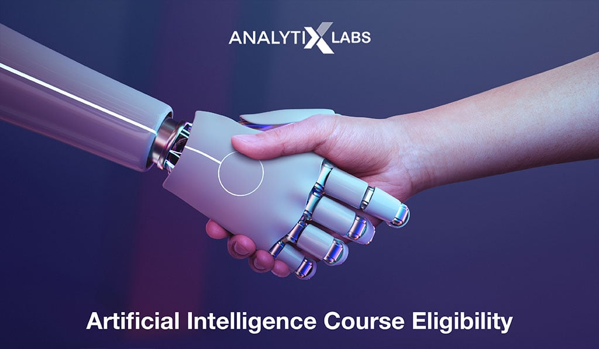

Impact of Artificial Intelligence on Society
Artificial intelligence (AI) has had a significant impact on society
since its inception. It has transformed industries such as
healthcare, finance, and transportation, and has the potential to
revolutionize many others. However, like any technology, AI also has
its drawbacks and raises important ethical concerns. One of the main
benefits of AI is its ability to process and analyze large amounts
of data quickly and accurately. This has allowed for the development
of personalized medicine, where doctors can use AI algorithms to
analyze a patient's medical history and predict potential health
issues before they arise. AI has also been used to improve the
accuracy of disease diagnosis, detect early signs of cancer, and
assist in surgical procedures. In the financial industry, AI has
been used to automate trading, identify patterns in financial data,
and manage investment portfolios. Self-driving cars, powered by AI,
have the potential to reduce the number of accidents caused by human
error on the roads. AI-powered virtual assistants, such as Siri and
Alexa, have become ubiquitous in households, providing users with
personalized information and assistance. However, the use of AI also
raises significant ethical concerns. One of the main concerns is the
potential for AI to replace human jobs. As AI becomes more advanced,
it may be able to perform tasks that were previously done by humans,
leading to job loss and economic inequality. There is also the risk
that AI algorithms may perpetuate existing biases in society,
leading to discrimination against marginalized communities. Another
concern is the potential misuse of AI for malicious purposes. AI
algorithms can be used to create deepfakes, which are realistic but
fake images or videos that can be used to spread false information.
AI-powered weapons could also be used to carry out attacks with
minimal human involvement, raising concerns about the ethics of
autonomous weapons. In conclusion, while AI has the potential to
transform society in many positive ways, it is important to consider
the potential drawbacks and ethical concerns associated with its
use. As AI technology continues to advance, it will be crucial to
ensure that it is used ethically and responsibly to ensure that its
benefits are maximized while minimizing its potential harms.
Challenges to be faced
The Rise of Autonomous Weapons and Their Ethical Implications
The field of artificial intelligence is expanding rapidly, and with it comes the development of autonomous weapons. These weapons are designed to operate independently, without any human intervention, and they have the potential to revolutionize warfare. However, this development also raises ethical questions that must be addressed.
The idea of autonomous weapons has been around for decades, but recent advances in AI have made them more feasible. These weapons are capable of making decisions based on real-time data, allowing them to adapt to changing situations in ways that humans cannot. This makes them attractive to military planners, who see them as a way to reduce casualties and increase the effectiveness of their forces.
However, the use of autonomous weapons raises a number of ethical concerns. One of the biggest concerns is the potential for these weapons to cause unintended harm. If an autonomous weapon makes a mistake, there may be no way to hold anyone accountable for the resulting damage. This could lead to a situation where innocent civilians are killed or injured without any clear legal or moral responsibility.
Another concern is the potential for these weapons to be hacked or otherwise compromised. If an adversary gains control of an autonomous weapon, it could be used to cause harm to innocent people or to carry out attacks that would otherwise be illegal or unethical. This raises questions about the security of these weapons and the potential risks they pose to society.
Finally, there is the question of whether the use of autonomous weapons is morally justifiable. Some argue that these weapons are inherently immoral because they remove human decision-making from the equation. Others argue that they are necessary for national security and that their use can be justified in certain situations.
As the development of autonomous weapons continues, it is important to address these ethical questions head-on. Governments, military leaders, and researchers must work together to develop clear guidelines for the use of these weapons and to ensure that they are deployed in a responsible and ethical manner. Only by doing so can we ensure that the benefits of AI are maximized while minimizing the risks and negative consequences.

Positive Impacts of Artificial Intelligence on Society
Artificial intelligence is transforming the world of education by providing innovative ways to teach, learn and assess student progress. With the use of AI, it is now possible to provide personalised and adaptive learning experiences, which are tailored to individual needs and preferences. This can help students to learn at their own pace, in a way that suits them best, and can greatly improve learning outcomes.
AI-powered virtual tutors and chatbots can offer support to students, answering questions and providing feedback in real-time. This not only saves time for educators but also helps students to gain a deeper understanding of the material they are studying. Additionally, AI can be used to track student progress and identify areas where additional support or resources may be needed.
One of the most significant impacts of AI on education is in the field of online learning. The COVID-19 pandemic has accelerated the growth of online learning, and AI has played a crucial role in making it more effective and accessible. AI-powered platforms can help to automate administrative tasks, such as grading and scheduling, freeing up time for educators to focus on teaching and providing support to students.
Another area where AI is making an impact is in the development of intelligent educational content. AI can be used to create interactive and engaging learning materials, such as simulations and games, that are designed to keep students engaged and motivated. These materials can also be personalised to match the individual learning style of each student.
While there are many benefits to using AI in education, there are also potential challenges that need to be addressed. One of the most significant concerns is the potential for bias in AI algorithms, which could lead to unequal treatment of students. It is important to ensure that AI is used in a responsible and ethical way, with appropriate safeguards in place to prevent bias and protect student privacy.
In conclusion, the use of AI in education has the potential to revolutionise the way we teach and learn. With the ability to provide personalised and adaptive learning experiences, as well as automate administrative tasks and develop intelligent educational content, AI can greatly improve learning outcomes and make education more accessible and effective for all.
